1
 Power BI
Power BI Qlik Cloud
Qlik Cloud Looker Studio
Looker Studio SQL Server
SQL Server
明确需求
背景与目标明确问题、需要改进的决策、涉及的用户以及预期结果。
数据分析
Patrones Lab 是一个用数据分析研究现实生活中日常现象的实验室。
这里的独立项目都以公开数据为基础，旨在发现规律、描述现象，并结合背景说明研究结果。
从提出问题、整理数据到开展清晰的分析，最终以图表呈现结果。

我是Malcolm Di Pietro Cagliari，一名精算师，从事数据与分析工作。我在银行、保险及航空运输行业积累了商业智能、企业报表、数据建模和预测分析经验。
我擅长将业务需求转化为数据解决方案：定义关键绩效指标（KPI）、整理信息、制作仪表板并开发模型，帮助团队更好地理解现状，掌握更充分的信息再做决策。
明确问题、需要改进的决策、涉及的用户以及预期结果。
确定可用的数据源，了解数据出处、更新情况、可靠性和主要局限。
整理、清洗并合并数据，构建一致、可用的数据集。
根据既定目标开展分析、构建模型或制作仪表板。
检查结果是否一致、稳定，并符合实际业务情况。

SPSS Modeler记录最终成果，将重复流程自动化，并根据反馈持续改进。
请留言，我会尽快回复。